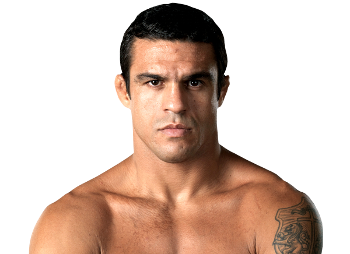

Vitor Belfort es un peleador brasileño de MMA conocido como “The Phenom”. Nació el 1 de abril de 1977 en Río de Janeiro, Brasil. Fue campeón de peso pesado y peso semipesado de UFC, destacándose por su velocidad y nocauts devastadores.
Belfort combinó boxeo, muay thai y jiu-jitsu brasileño, convirtiéndose en un luchador completo. Sus finales rápidas y su explosividad lo hicieron famoso mundialmente y uno de los mayores referentes brasileños en UFC.

Otros que podrían interesarte: